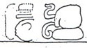

Dos Pilas Hieroglyphic Stairway 2: West Section, Step 1
Reading:
Date in A1-D1 completely gone
C2
Itznamaaj Balam
D2

[Eroded child of mother statement?]
E1
????
F1a
u nikil?
"child of father"
F1b
B'alah
E2
Chan K'awiil
F2
K'uhul Mutul Ahaw
"Holy Lord of Mutul"
Overall Summary: On an unknown date, something happened involving Itznamaaj Balam, child of ???? and B'alah Chan K'awiil, Holy Lord of Mutul.